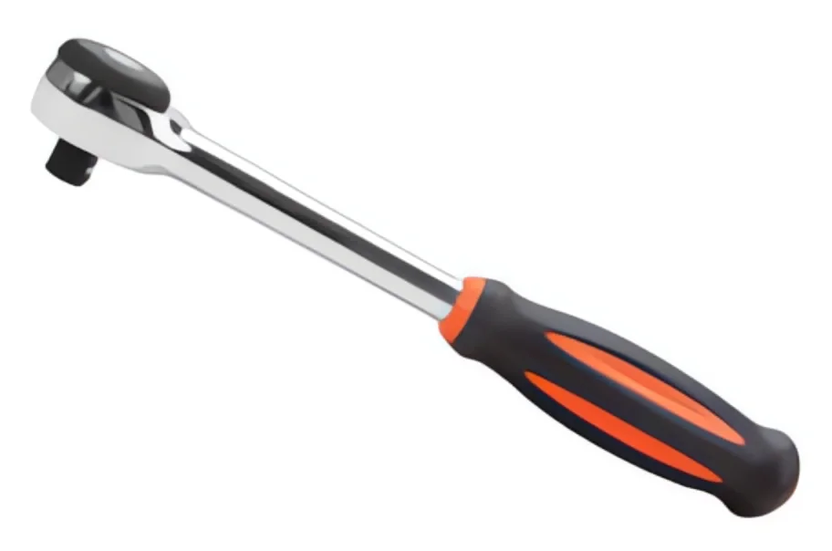

GROZ · Sockets & Accessories
Dual Drive Ratchet Handles
CAT NR RTD/DD/3-8/UG · ORD NR 40314
| CAT NR (catalogue number) | RTD/DD/3-8/UG |
|---|---|
| ORD NR (order number) | 40314 |
| Box quantity | 5 |
| Drive (inch) | 3/8 |
| Length (inch) | 8-21/32 |
| Length (mm) | 225 |
| Torque (ft-lb) | 149 |
| Torque (nm) | 202 |
Ask for a quote The catalogue PDF, page 145
“Ask for a quote” opens this product in the catalogue: add it to your quote and send it. Buyers from Africa, the Gulf and worldwide are welcome; prices in USD, EUR or INR.
From the GROZ Workshop Tools CB-05 catalogue. Not yet verified: these details were read from the printed catalogue automatically; check the catalogue page before ordering.